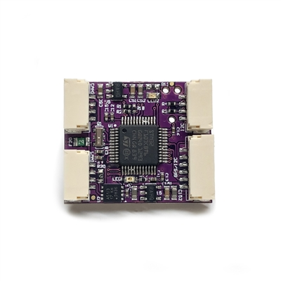

mRobotics DroneCAN Adapter Node¶
The mRo CAN Node is a collaborative project with ArduPilot. It began with a desire to make CAN peripherals more standard in the drone community. Compared to other boards that have open-source hardware but closed source code, mRo CAN node is completely open. The CAN Node F303 is the version 2 of mRobotics’ CAN Node, featuring more flash space.
With this board, you can easily utilize the ArduPilot driver library to convert ArduPilot supported GPS, I2C, and GPIO based (ie Safety Switch) peripherals to DroneCAN bus peripherals.
mRo CAN Node uses open-source code, which utilizes the existing and proven ArduPilot DroneCAN driver library (see DroneCAN Adapter Nodes for firmware versions and capabilities). It features a bootloader for “over CAN” firmware updates and an RTOS running Chibios.
The adapter’s CAN Node ID can be set manually or automatically (Not yet supported in stable ArduPilot). The hardware design is open source, so that anyone can contribute to the CAN peripheral world with a proven CAN / MCU interface.
As delivered, it is setup to be plug-and-play as a DroneCAN GPS/Magnetometer/LED/Airspeed by simply plugging in the 6pin GH connector from any mRo or other GPS, and connecting I2C Compasses, RGB LEDs, and/or Airspeed sensors supported by ArduPilot, as desired.
This adapter uses the “f303-GPS” or “f303-Universal” (default) firmware in https://firmware.ardupilot.org/AP_Periph. See the SLCAN section of DroneCAN advanced setup for downloading instructions, if changes are desired or updates become available.
Setup¶
Verify the following parameters are set on your autopilot via your ground station.
CAN_P1_DRIVER = 1 (assuming its on the first CAN bus of the autopilot and will be using the first driver)
CAN_D1_DRIVER = 1 (DroneCAN)(assuming its the first driver)
GPS_TYPE = 9 (DroneCAN) or if it will be the secondary GPS, set instead
GPS_TYPE2 = 9 (DroneCAN)
Reboot
Make sure the DroneCAN compass driver is not disabled. (COMPASS_TYPEMASK bit 9 should not be set).
If your controller has multiple compasses attached already, you may want to set the attached compass as a higher priority than others, if it has better precision or performance.
To enable an attached I2C RGB LED set:
NTF_LED_TYPES bit 5 should be set
If you want to enable an attached I2C airspeed sensor, set:
ARSPD_TYPE = 8 (DroneCAN)
Then you must access your Adapter’s CAN parameters to select Airspeed and LED type being attached to the adapter. Using Mission Planner (or DroneCAN GUI), go to the menu SETUP/Optional Hardware/DroneCAN/SLCan Mode CAN1/Parameters. Once the CAN Adapters parameters appear, change the following (this changes them inside the DroneCAN adapter, NOT the autopilot, allowing the adapter to use the correct driver and convert the information to DroneCAN airspeed format):
ARSPD_TYPE = to match your sensor type: 3,for an I2C-MS5525; 1 for an MS4525DO, etc.
ARSPD_USE = 1
ARSPD_BUS = 0
For the LED, set its NTF_LED_TYPES appropriately for the attached LED.
Then reboot.
Where to buy¶
Schematics¶
Note
F103 is replaced with F303 microprocessor